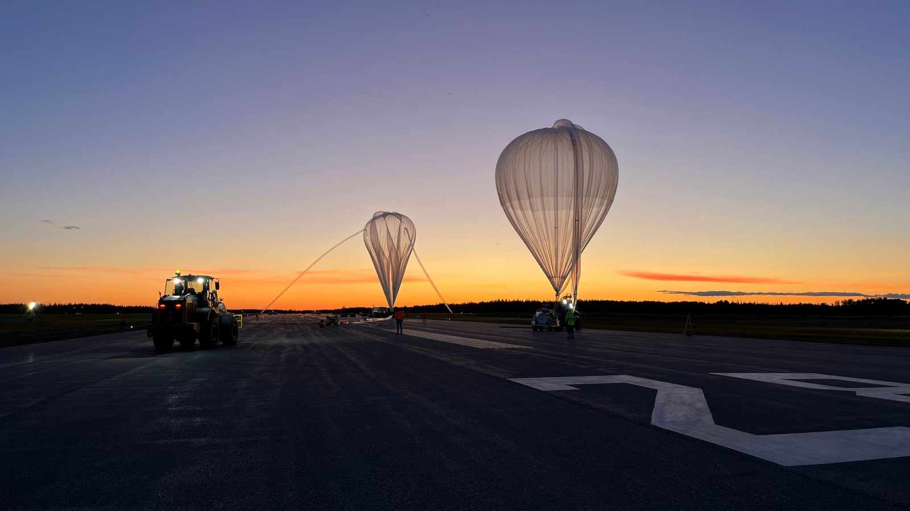

POET-STRATOS: infrared camera payload for a stratospheric balloon
A technology demonstration for POET, a proposed Canadian exoplanet space telescope: can a commercial infrared camera take images for astronomy research in near-space? I built the camera control and the link that sent commands up and images down. Nobody could touch the payload once it launched, so everything had to run unattended.
~33 kmflight altitude
3 hoursunattended flight
100+images returned
- Wrote C++ control of a 12-bit infrared camera's exposure, gain and cooling over a serial link, reading back every setting after writing it so failed updates were caught.
- Built a Python command and downlink system over a slow, lossy radio link, with packet retransmission and image compression, tested under simulated packet loss.
- Found a camera firmware defect that cut off images at certain exposure times, worked with the manufacturer's engineers, and flew only settings I had verified.
- Verified the payload's interface cable against the space agencies' requirements and wrote the payload operations manual.